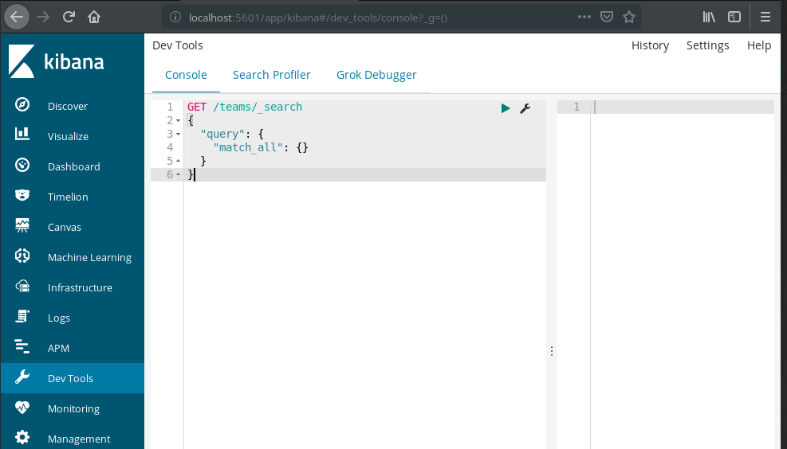
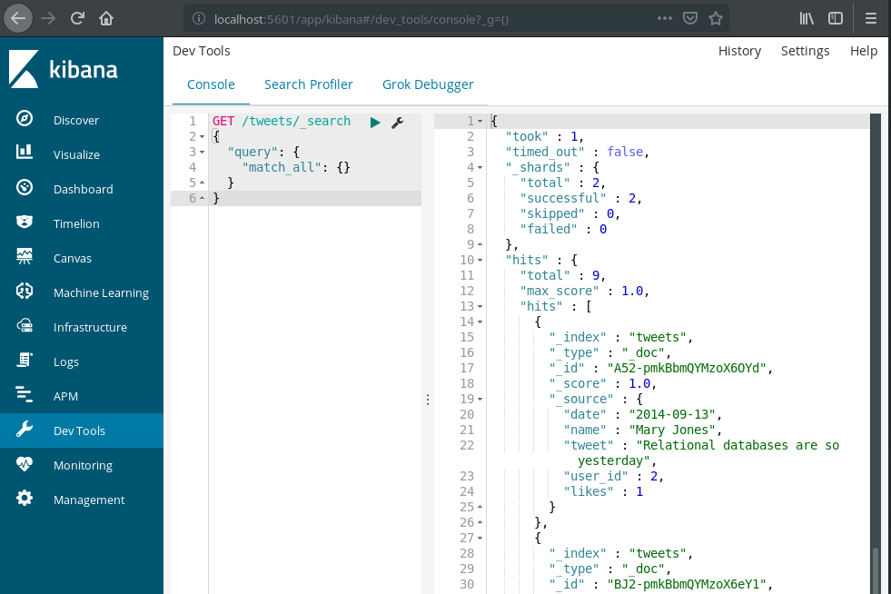

Elasticsearch Installation
We will be running Elasticsearch as a docker container. You can check if you have docker installed with: $ docker -v, if it’s installed it will print out the version installed. Check out the Installation: Docker if you need to install docker.
After docker is installed you can check your containers with: $ docker ps -a, if you don’t have an Elasticsearch container, you can get one by following the Installation: Docker Elasticsearch.
Kibana Introduction
In the Walkthrough: Elasticsearch we worked with Elasticsearch using cURL. An easier way to work with Elasticsearch is by using Kibana.
To access Kibana go to localhost:5601 in a web browser. After clicking through the splash screen, click Dev Tools from the Kibana menu.

This will take you to an area where you can make HTTP Requests, and view the Response in a more streamlined, and interactive environment. This will be a much nicer area to work than using cURL from the command line. However, when we start working with Elasticsearch in AWS you will need to continue working with cURL, so don’t completely forget about cURL.
Let’s take a look at GET /teams/_search.

We can make the same HTTP Requests we would make from the terminal with cURL in Kibana. The syntax changes slightly since Kibana already knows the URL, and port for your Elasticsearch container. It also adds the JSON for us, and sets the HTTP Header to allow JSON. This simplifies our lives greatly. Try out Kibana during this studio.